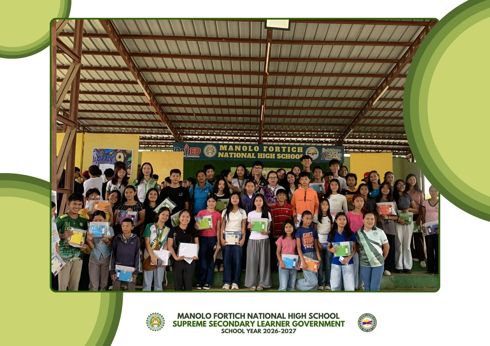
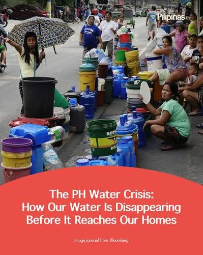

Latest Updates & Reports
Real transparent stories showing where and why your aid matters.

Back-to-School Drive Reaches more than 50 Students
Thanks to the dedicated students of MFNHS, notebooks, hygiene items, and backpacks were successfully distributed to schools in Bukidnon days before the start of school.
Read Full Story →
Why Safe Clean Water Infrastructure Stalls in Sector 4
An inside structural look into why recent pipeline damages are cutting off water access to families, and how local community plumbing teams are stepping up.
Read Full Story →Where Does Your Financial Donation Go?
We believe in absolute clarity. Read exactly how monetary aid is processed into physical goods.
Where It Goes →